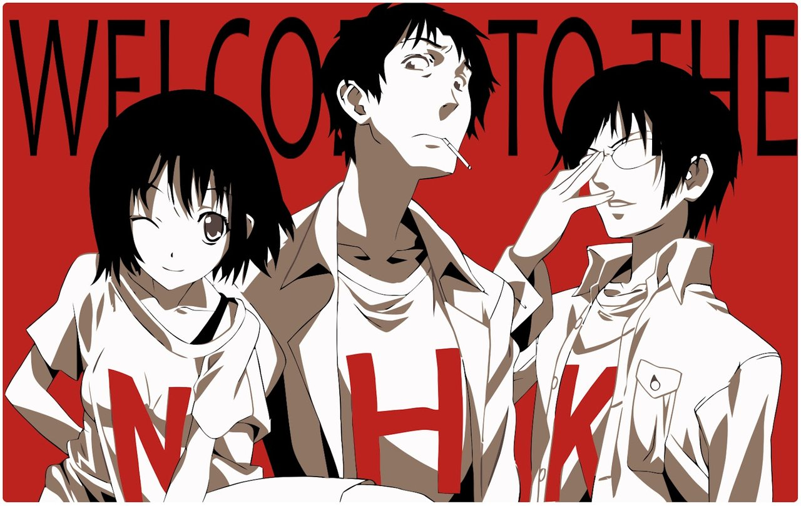
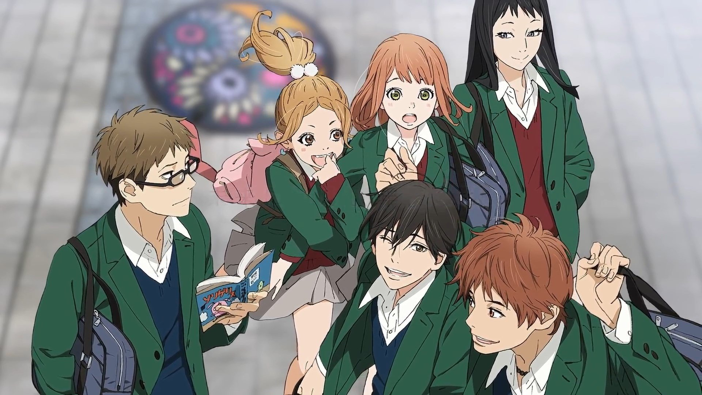

NHK Ni Youkoso

Sinopse:A história se centraliza em Tatsuhiro Satou, um jovem de 21 anos, desempregado que abandonou a faculdade. Acreditando fazer parte de uma conspiração ele leva uma vida de hikikomori, vivendo há anos exclusivamente em seu quarto e sendo sustentado pelos pais.
Personagens Principais:
- Tatsuhiro Satou
- Misaki Nakahara
- Kaoru Yamazaki
- Hitomi Kashiwa
Assista ao trailer:
Saiba mais sobre NHK
Orange

Sinopse: No primeiro dia de aula, Takamiya Naho recebe uma carta misteriosa de si mesma 10 anos no futuro, que a aconselha a não realizar certas ações. Mas ela ignora, os amigos de Naho convidam o novo menino que chega de Tóquio, Kakeru, para sair depois da escola. Mas algo terrível acontece a Kakeru nesse dia.
Personagens Principais:
- Kakeru Naruse
- Naho Takamiya
- Hiroto Suwa
- Azusa Murasaka
Assista ao trailer:
Saiba mais sobre Orange
Attack on Titan

Sinopse: Em um mundo devastado por titãs gigantes que devoram seres humanos, a humanidade vive cercada por muralhas. Eren Yeager, junto com seus amigos Mikasa e Armin, luta para proteger a humanidade e descobrir os segredos dos titãs.
Personagens Principais:
- Eren Yeager
- Mikasa Ackerman
- Armin Arlert
- Levi Ackerman
Assista ao trailer:
Saiba mais sobre Attack on Titan